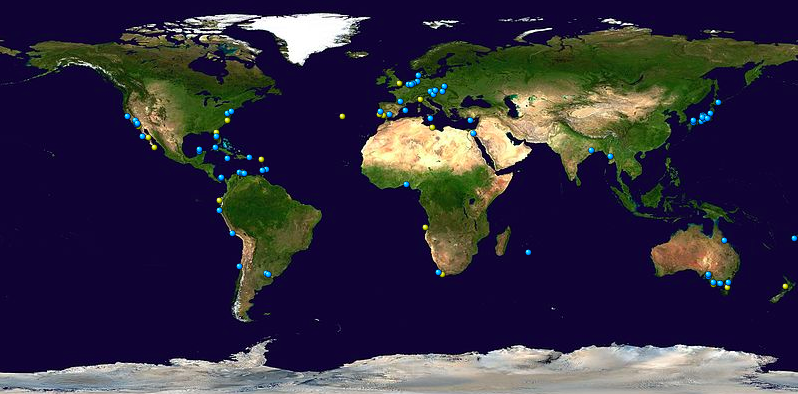

The megalodon had comsopolitan distribution, meaning that it was found in all parts of the world wherever there was a suitable habitat. Fossils have been excavated from Europe, Asia, Africa, Oceania, and the Americas. It most freuqently lives in subtropidal and temperate latitudes. They lived in a wide range of habitats including shallow coastal waters, areas of coastal upwelling, swampy coastal lagoons, sandy littorals, and offshore deep sea water environments. They also could have lived in offshore environments, for example, many megalodon teeth have been excavated from the Marianas Trench (the deepest point in all of the oceans). While there are many different reasons as to why megalodon teeth were found in the Marianas Trench, there is absolutely no way they could have survived there presently. Their preference for warm, coastal and nutrient rich waters was too great. On average, megalodon found in the southern hemisphere were larger than those that inhabited the northern hemisphere. Mean size in the southern hemisphere measured 38 feet while mean size in the nothern hemisphere measured 31 feet. Additionally, megalodon found in the Pacific where larger than in the Atlantic, measuring mean lengths of 36 feet for Pacific and 31 feet for Atlantic. Below is a map of megalodon fossil discoveries found around the world. Yellow is for megalodon from the Pliocene while blue is for meglaodon from the Miocene. Megalodon fossils have been popularly found in the areas around California, Australia, and Japan.
